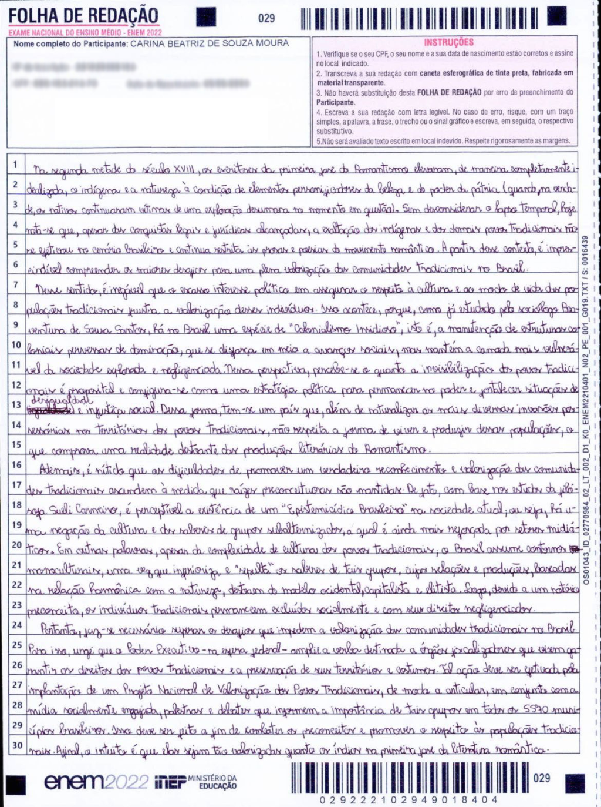
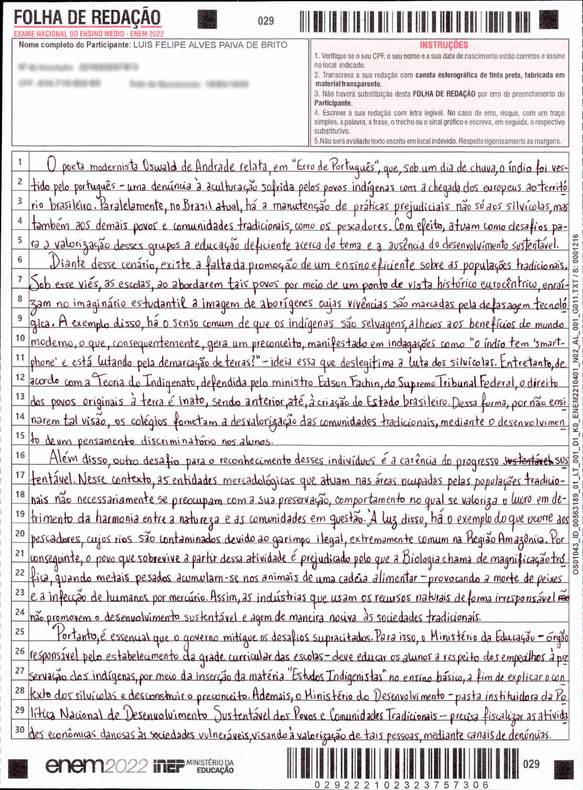

Maria Fernanda Simionato de Lemes, de Porto Alegre (RS)
Introdução
Historicamente, a partir da implementação das missões jesuíticas no Brasil colonial, os povos nativos tiveram suas tradições suprimidas e o seu conhecimento acerca das peculiaridades territoriais menosprezado. Na contemporaneidade, a importância dessas populações configura um fator indispensável à compreensão da diversidade étnica do nosso país. Contudo, ainda persistem desafios à valorização dessas comunidades, o que interfere na preservação de seus saberes. Logo, urgem medidas estatais que promovam melhorias nesse cenário.
Desenvolvimento
Sob esse viés, é válido destacar a fundamentabilidade dos povos tradicionais como detentores de pluralidade histórica e cultural, que proporciona a disseminação de uma vasta sabedoria na sociedade. Nesse sentido, o Instituto do Patrimônio Histórico e Artístico Nacional (Iphan) afirma as heranças tradicionais desses grupos como constituintes do patrimônio imaterial brasileiro. Dessa forma, sabe-se que a contribuição desses indivíduos para a formação intelectual do corpo social engloba práticas de sustentabilidade, agricultura familiar e, inclusive, confere a eles uma participação efetiva na economia do país. Assim, evidencia-se a extrema relevância dessas comunidades para a manutenção de conhecimentos diferenciados, bem como para a evolução da coletividade.
Entretanto, a falta de representantes políticos eleitos para essa classe ocasiona a desvalorização das suas necessidades sociais, que não são atendidas pelos demais legisladores. Nesse contexto, a Constituição Federal assegura direitos inalienáveis a todos os cidadãos brasileiros, abordando o dever de inclusão de povos tradicionais nas decisões públicas. Desse modo, compreende-se que a existência de obstáculos para o reconhecimento da importância de populações nativas se relaciona à ineficácia na incorporação de representantes que sejam, de fato, interessados na perpetuação de saberes e técnicas ancestrais propagados para esses grupos. Sendo assim, comprova-se a ocorrência de um grave problema no âmbito coletivo, o qual impede a garantia plena dos direitos básicos dessas pessoas.
Conclusão
Diante do exposto, denota-se a urgência de propostas governamentais que alterem esse quadro. Portanto, cabe ao Estado – cuja função principal é a proteção dos direitos de seus cidadãos – a implantação de mudanças no sistema eleitoral, por meio da criação de cotas rígidas para a eleição de políticos oriundos de localidades nativas. Tal reestruturação terá como finalidade a valorização de povos tradicionais, reconhecendo a sua fundamentalidade na composição histórica e cultural da sociedade brasileira.
Rodrigo Junqueira, de São Paulo (SP)
Introdução
No livro "Ideias para Adiar o Fim do Mundo", Ailton Krenak critica o distanciamento entre a população brasileira como um todo e a natureza, o que não se aplica às comunidades indígenas. Tal pensamento é extremamente atual, já que não só indígenas como todas as populações tradicionais têm uma relação de respeito mútuo com a natureza, aspectos que as diferenciam do resto dos brasileiros. Com isso, a agressão ao meio ambiente e o apagamento dos saberes ancestrais configuram desafios para a valorização de comunidades e povos tradicionais no Brasil.
Desenvolvimento
Primeiramente, é preciso compreender como a agressão ao meio ambiente fere as comunidades tradicionais. Há séculos esses povos vêm construindo suas culturas com respeito à natureza, tratando-a de forma sustentável. Consequentemente, criou-se nesses grupos uma visão afetiva dos recursos naturais, que se tornaram base para a manutenção de uma identidade característica a cada uma dessas comunidades. No entanto, todos os biomas brasileiros estão sendo constantemente ameaçados, seja pela mineração, garimpo ilegal, desmatamento ou poluição, fatores que têm em comum a priorização do gasto financeiro em detrimento da preservação ambiental. Assim, parte da população coloca em risco o maior patrimônio dos povos tradicionais, a natureza, em busca de recursos naturais que trazem benefícios restritos aos agressores, tornando o modo de vida dessas comunidades impraticável. Portanto, com base na importância do meio ambiente para as comunidades tradicionais, causar danos à natureza significa, também, causar danos aos povos em questão.
Ademais, é de grande relevância entender como o apagamento dos saberes ancestrais leva à desvalorização dos povos tradicionais. Devido à grande diversidade de povos tradicionais no Brasil, houve, em cada um deles, a criação de um conjunto de conhecimentos, pensamentos, filosofias e linguagens distintas, passados pelas gerações, dirando e mantendo vivo o modo de vida que caracteriza identitariamente cada grupo. Entretanto, essa bagagem sistêmica é muito pouco externalizada, pelo fato de que esses saberes são coletivizados apenas em esferas menores, de forma a manter a ancestralidade dos povos locais apenas entre si. Logo, todo conhecimento produzido nessa perspectiva é desconhecido do grande público, sendo pouco discutido e não fazendo parte da visão de mundo da maioria dos brasileiros. Dessa forma, os saberes dos povos tradicionais são desconsiderados, acarretando na desvalorização de todos esses grupos.
Conclusão
Em síntese, o impacto causado ao meio ambiente e a desconsideração de seus saberes são grandes agentes na desvalorização das comunidades tradicionais. Por isso, cabe ao Ministério do Meio Ambiente proteger os biomas do país através do endurecimento de punições contra crimes ambientais, com a finalidade de salvaguardar o modo de vida de diferentes povos, tornando possível a manutenção da diversidade cultural brasileira. Além disso, o Ministério da Educação deve promover a discussão sobre os conhecimentos das comunidades tradicionais, por meio da incorporação de conteúdos relacionados a esses povos na grade curricular das escolas, a fim de divulgar a visão de mundo desses grupos, fomentando uma convivência pacífica entre toda a população.
Carina Beatriz de Souza Moura, de Caruaru (PE)
Introdução
Na segunda metade do século XVIII, os escritores da primeira fase do Romantismo elevaram, de maneira completamente idealizada, o indígena e a natureza à condição de elementos personificadores da beleza e do poder da pátria (quando, na verdade, os nativos continuaram vítimas de uma exploração desumana no momento em questão). Sem desconsiderar o lapso temporal, hoje nota-se que, apesar das conquistas legais e jurídicas alcançadas, a exaltação dos indígenas e dos demais povos tradicionais não se efetivou no cenário brasileiro e continua restrita as prosas e poesias do movimento romântico. A partir desse contexto, é imprescindível compreender os maiores desafios para uma plena valorização das comunidades tradicionais no Brasil.
Desenvolvimento
Nesse sentido, é inegável que o escasso interesse político em assegurar o respeito à cultura e ao modo de vida das populações tradicionais frustra a valorização desses indivíduos. Isso acontece, porque, como já estudado pelo sociólogo Boaventura de Sousa Santos, há no Brasil uma espécie de “Colonialismo Insidioso”, isto é, a manutenção de estruturas coloniais perversas de dominação, que se disfarça em meio a avanços sociais, mas mantém a camada mais vulnerável da sociedade explorada e negligenciada. Nessa perspectiva, percebe-se o quanto a invisibilização dos povos tradicionais é proposital e configura-se como uma estratégia política para permanecer no poder e fortalecer situações de desigualdade e injustiça social. Dessa forma, tem-se um país que, além de naturalizar as mais diversas invasões possessórias nos territórios dos povos tradicionais, não respeita a forma de viver e produzir dessas populações, o que comprova uma realidade destoante das produções literárias do Romantismo.
Ademais, é nítido que as dificuldades de promover um verdadeiro reconhecimento e valorização das comunidades tradicionais ascendem à medida que raízes preconceituosos são mantidas. De fato, com base nos estudos da filósofa Sueli Carneiro, é perceptível a existência de um “Epistemicídio Brasileiro” na sociedade atual; ou seja, há uma negação da cultura e dos saberes de grupos subalternizados, a qual é ainda mais reforçada por setores midiáticos. Em outras palavras, apesar da complexidade de cultura dos povos tradicionais; o Brasil assume contornos monoculturais, uma vez que inferioriza e “sepulta” os saberes de tais grupos, cujas relações e produções, baseadas na relação harmônica com a natureza, destoam do modo ocidental, capitalista e elitista. Logo, devido a um notório preconceito, os indivíduos tradicionais permanecem excluídos socialmente e com seus direitos negligenciados.
Conclusão
Portanto, faz-se necessário superar os desafios que impedem a valorização das comunidades tradicionais no Brasil. Para isso, urge que o Poder Executivo – na esfera federal – amplie a verba destinada a órgãos fiscalizadores que visem garantir os direitos dos povos tradicionais e a preservação de seus territórios e costumes. Tal ação deve ser efetivada pela implantação de um Projeto Nacional de Valorização dos Povos Tradicionais, de modo a articular, em conjunto com a mídia socialmente engajada, palestras e debates que informem a importância de tais grupos em todos os 5.570 municípios brasileiros. Isso deve ser feito a fim de combater os preconceitos e promover o respeito às populações tradicionais. Afinal, o intuito é que elas sejam tão valorizadas quanto os índios na primeira fase da literatura romântica.

Luís Felipe Alves Paiva de Brito, de Maceió (AL)
Introdução
O poeta modernista Oswald de Andrade relata, em "Erro de Português", que, sob um dia de chuva, o índio foi vestido pelo português - uma denúncia à aculturação sofrida pelos povos indígenas com a chegada dos europeus ao território brasileiro. Paralelamente, no Brasil atual, há a manutenção de práticas prejudiciais não só aos silvícolas, mas também aos demais povos e comunidades tradicionais, como os pescadores. Com efeito, atuam como desafios para a valorização desses grupos a educação deficiente acerca do tema e a ausência do desenvolvimento sustentável.
Desenvolvimento
Diante desse cenário, existe a falta da promoção de um ensino eficiente sobre as populações tradicionais. Sob esse viés, as escolas, ao abordarem tais povos por meio de um ponto de vista histórico eurocêntrico, enraízam no imaginário estudantil a imagem de aborígenes cujas vivências são marcadas pela defasagem tecnológica. A exemplo disso, há o senso comum de que os indígenas são selvagens, alheios aos benefícios do mundo moderno, o que, consequentemente, gera um preconceito, manifestado em indagações como “o índio tem ‘smartphone’ e está lutando pela demarcação de terras?” – ideia essa que deslegitima a luta dos silvícolas. Entretanto, de acordo com a Teoria do Indigenato, defendida pelo ministro Edson Fachin, do Supremo Tribunal Federal, o direito dos povos tradicionais à terra é inato, sendo anterior, até, à criação do Estado brasileiro. Dessa forma, por não ensinarem tal visão, os colégios fometam a desvalorização das comunidades tradicionais, mediante o desenvolvimento de um pensamento discriminatório nos alunos.
Além disso, outro desafio para o reconhecimento desses indivíduos é a carência do progresso sustentável. Nesse contexto, as entidades mercadológicas que atuam nas áreas ocupadas pelas populações tradicionais não necessariamente se preocupam com a sua preservação, comportamento no qual se valoriza o lucro em detrimento da harmonia entre a natureza e as comunidades em questão. À luz disso, há o exemplo do que ocorre aos pescadores, cujos rios são contaminados devido ao garimpo ilegal, extremamente comum na Região Amazônica. Por conseguinte, o povo que sobrevive a partir dessa atividade é prejudicado pelo que a Biologia chama de magnificação trófica, quando metais pesados acumulam-se nos animais de uma cadeia alimentar – provocando a morte de peixes e a infecção de humanos por mercúrio. Assim, as indústrias que usam os recursos naturais de forma irresponsável não promovem o desenvolvimento sustentável e agem de maneira nociva às sociedades tradicionais.
Conclusão
Portanto, é essencial que o governo mitigue os desafios supracitados. Para isso, o Ministério da Educação – órgão responsável pelo estabelecimento da grade curricular das escolas – deve educar os alunos a respeito dos empecilhos à preservação dos indígenas, por meio da inserção da matéria “Estudos Indigenistas” no ensino básico, a fim de explicar o contexto dos silvícolas e desconstruir o preconceito. Ademais, o Ministério do Desenvolvimento – pasta instituidora da Política Nacional de Desenvolvimento Sustentável dos Povos e Comunidades Tradicionais – precisa fiscalizar as atividades econômicas danosas às sociedades vulneráveis, visando à valorização de tais pessoas, mediante canais de denúncias.

Ana Alice Teixeira Freire, de Fortaleza (CE)
Introdução
Na minissérie documental “Guerras do Brasil.doc”, presente na plataforma Netflix, o professor indígena Ailton Krenak propõe a reflexão acerca da dizimação dos povos originários a partir de perspectivas atuais, em que é retratada a história sob o olhar do esquecimento e da violência contra esses povos, a despeito da sua riqueza cultural e produtiva. Essas formas de desvalorização das comunidades tradicionais do Brasil são respaldadas, dentre outros fatores, pela invisibilização histórica desses atores sociais no ensino básico e pelo preconceito que rege o senso comum. Dessa forma, é imprescindível a intervenção sociogovernamental, a fim de superar os desafios mencionados.
Desenvolvimento
Com efeito, cabe destacar a exclusão generalizada dos aspectos históricos e culturais referentes às etnias tradicionais dentro do sistema educacional como fator proeminente à perpetuação da desvalorização do grupo em questão, uma vez que, sendo a escola um dos núcleos de integração social e informacional, a carência de estímulos ao conhecimento dos povos nativos provoca desconhecimento, e consequentemente, o cidadão comum não tem base da informação acerca da indispensabilidade das comunidades originárias à formação do corpo social brasileiro. Nesse sentido, os versos “Nossos índios em algumas poucas memórias/Os de fora nos livros das nossas escolas”, da banda cearense Selvagens à Procura da Lei, ilustram uma construção do ensino escolar pautada no esquecimento dessa minoria, de maneira a ampliar sua desvalorização. Assim, é constatável a estreita relação entre as lacunas na educação e o fraco reconhecimento dos povos e das comunidades tradicionais.
Ademais, vale ressaltar o preconceito cultivado no ideário popular como empecilho à importância atribuída aos povos nativos, posto que, em decorrência da baixa representatividade em ambientes escolares, como mencionado anteriormente, e do baixo respaldo cultural, marcado por estereótipos limitantes e etnocentristas, isto é, que supõem superioridade de uma etnia em relação à outra, há formação de estigmas sobre pessoas dessas minorias e, por conseguinte, não há o reconhecimento de suas ricas peculiaridade. Seguindo essa linha de raciocínio, é possível estabelecer conexões entre a atualidade e a carta ao rei de Portugal escrita por Pero Vaz de Caminha, no momento da chegada dos portugueses ao Brasil, de forma que a perspectiva do navegador em relação ao indígena, permeada de suposta inocência, maleabilidade e passividade, pouco alterou-se na concepção atual, evidenciando a prepotência e a altivez que são implicações da ignorância e do silenciamento das fontes tradicionais. Então, são necessárias medidas de mitigação dessa problemática para o alcance do bem estar da sociedade.
Conclusão
Em suma, entende-se o paralelo entre a desvalorização dos povos nativos e o apagamento histórico destes, além do preconceito sobre este grupo, de modo a urgir atenuação do cenário exposto. Para isso, cabe ao Ministério da Educação a ampliação do ensino histórico e cultural do acervo tradicional, por meio da reformulação das bases de assuntos abordados em sala de aula e da contratação de profissionais dessas etnias, com o objetivo de pluralizar as narrativas e evitar a exclusão provocada por apenas uma história, em consonância com o livro da escritora angolana Chimamanda Ngozie Adichie “O perigo da história única”. Também, é papel dos veículos culturais, como a mídia, a representação ampla e fidedigna desses grupos, com o fito de minorar a visão estigmatizada que foi construída. Com isso, o extermínio simbólico denunciado por Krenak será minguado.